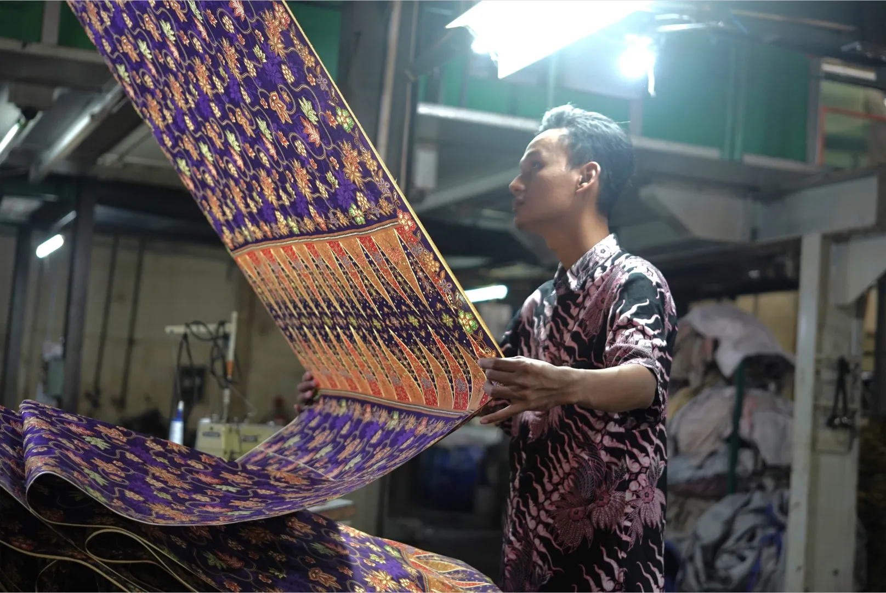

Mengenal Keunggulan Kain Printing untuk Batik dan Fashion
Dalam industri tekstil, desain kain menjadi faktor penting yang menentukan karakter sebuah produk. Baik untuk batik maupun fashion modern, pemilihan motif, warna, dan jenis kain perlu disesuaikan dengan konsep serta kebutuhan produk.
Teknologi tekstil printing menjadi salah satu pilihan untuk mewujudkan beragam desain dengan fleksibilitas motif dan efisiensi produksi.
Mengapa Memilih Kain Printing?
1. Proses Produksi Lebih Efisien
Teknologi printing membantu proses pencetakan motif pada kain secara efisien, terutama untuk kebutuhan produksi dalam jumlah besar. Hal ini mendukung brand dalam memenuhi kebutuhan material sesuai perencanaan.
2. Fleksibilitas Motif dan Warna
Kain printing memungkinkan pengembangan beragam desain, mulai dari motif batik klasik hingga pola modern dengan perpaduan warna dan detail yang sesuai konsep. Fleksibilitas ini memberikan ruang bagi brand untuk menciptakan tampilan produk yang khas.
3. Cocok untuk Berbagai Produk
Kain printing dapat digunakan untuk kebutuhan batik maupun fashion. Motifnya bisa disesuaikan dengan karakter produk, konsep koleksi, dan identitas brand, baik untuk desain bernuansa tradisional maupun modern.
Pilihan Motif Kain Printing di PT Kusuma Kencana Mulya
PT Kusuma Kencana Mulya mendukung kebutuhan produksi kain printing untuk segmen batik dan fashion. Pelanggan dapat memilih motif yang tersedia atau mengajukan desain sendiri sesuai kebutuhan produk.
Setiap desain diproses dengan memperhatikan detail motif, kesesuaian warna, dan kerapian hasil cetak. Pemilihan material serta perencanaan desain juga menjadi bagian penting untuk membantu menghasilkan kain yang sesuai dengan kebutuhan pelanggan.
Wujudkan Desain Kain untuk Brand Anda
Setiap produk memiliki karakter berbeda. Karena itu, pemilihan motif, warna, dan material perlu disesuaikan dengan konsep serta tujuan penggunaan kain agar hasilnya selaras dengan identitas brand.
Punya desain sendiri atau ingin berkonsultasi mengenai pilihan kain? Hubungi PT Kusuma Kencana Mulya untuk mendiskusikan kebutuhan desain dan produksi kain printing bagi brand Anda.